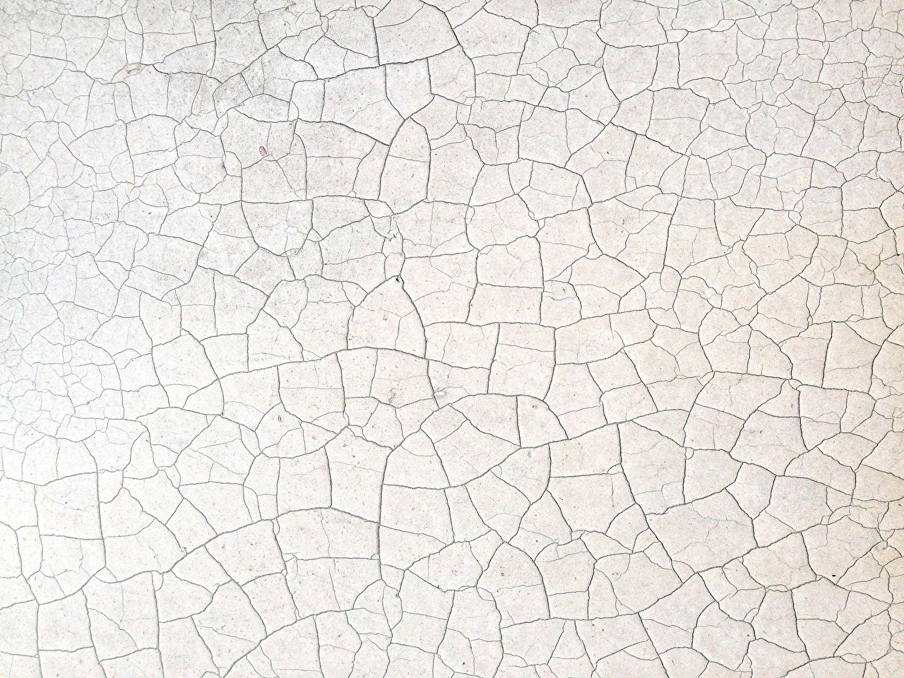

<!DOCTYPE html>
<html lang="ja">
<head>
    <!-- Global site tag (gtag.js) - Google Analytics -->
<script async src="https://www.googletagmanager.com/gtag/js?id=G-T7RR3SKHDK"></script>
<script>
  window.dataLayer = window.dataLayer || [];
  function gtag(){dataLayer.push(arguments);}
  gtag('js', new Date());

  gtag('config', 'G-T7RR3SKHDK');
</script>
    <meta charset="UTF-8">
    <meta name="viewport" content="width=device-width, initial-scale=1.0">
    <title>なぜ下地焼きが必要か？夏に日焼けする前に</title>
    <meta name="description" content="日焼けの危険を知って欲しい。認識を変えたい。">
    <link rel="stylesheet" href="sun.css">
    <link rel="stylesheet" href="https://use.fontawesome.com/releases/v5.15.2/css/all.css" integrity="sha384-vSIIfh2YWi9wW0r9iZe7RJPrKwp6bG+s9QZMoITbCckVJqGCCRhc+ccxNcdpHuYu" crossorigin="anonymous">
    <link rel="icon" href="favicon.ico" type="image/vnd.microsoft.icon">
  <link rel="apple-touch-icon" href="favicon.ico">
</head>
<body class="article" id="top">
    <div id="toTop"><i class="fas fa-3x fa-arrow-alt-circle-up"></i></div>
    <nav id="drawer">
        <!--		jQtoggle class="show"-->
        <ul>
            <li class="home"><a href="../../index.html">home</a></li>
            <li class="skin"><a href="../skin.html">skin</a></li>
            <li class="others"><a href="../../others/others.html">others</a></li>
        </ul>
                </nav>
                <header>
                    <a href="#top" class="hdrLogo"></a>
                    <div class="headerT"><p>ブッチの</p>
                        <p>ぶったまげ</p>
                        <p>ブログ！</p></div>
                    <label for="label">
                        <input type="checkbox" id="label">
                        <div id="navToggle">
                            <span></span>
                        </div>
                    </label>
        
                    <nav class="navWide">
                        <ul>
                            <li class="whome"><a href="../../index.html">home</a></li>
                            <li class="wskin"><a href="../skin.html">skin</a></li>
                            <li class="wothers"><a href="../../others/others.html">others</a></li>
                        </ul>
                    </nav>
                </header>
    <main>

        <section class="title">
            <h1>なぜ下地焼きが必要か？夏に日焼けする前に</h1>
            <time>2021/3/20</time>
        </section>
        <section class="mv">
            <h1></h1>
        </section>
        <article>
            <h1>小麦色に焼けた肌</h1>
            <p>健康的なイメージは誤解そのもの。紫外線はDNAを破壊し皮膚を老化させます。
                人が歳を重ねて老けていくのは、それだけ紫外線を浴びる年数が増すからです。<br>
                知識のない人は、紫外線による影響を単なる肌荒れとして片付けます。
                    それは一時的な症状であって取り返しのつくものと軽く見ます。
                    例えば30代から見られる真皮弾性繊維の損壊が原因のたるみ毛穴を、
                    10代にできやすい皮脂過剰の毛穴のように生活習慣で治るものと誤認しています。
                    表面的には同じ症状であっても原因が違えばそれは別物なのです。<br>
            </p>

            <section class="image clearfix">
                <h1>DNAの修復</h1>
                
                <p>人体には紫外線により壊れたDNAを修復する機構が備わっています。
                    そのため、少し紫外線を浴びたからといって直ちに老化するということはありません。
                    目安として夏のアウトドアで1日野外で過ごした場合、修復にはその日も含めて
                    2日かかると言われています。ということはもしその翌日も野外で過ごした場合、
                    修復が損傷に追いつかなくなることになります。
                </p>
            </section>

            <section>
                <h1>アポトーシスと老化細胞</h1>
                <p>修復できないほどの損傷を受けると細胞は2つの選択肢を迫られます。
                    1つはアポトーシス、細胞の自殺です。まだこちらの方がまし。
                    もう1つの選択肢、老化細胞になる道に進むと厄介なことになります。
                    老化細胞は分裂することなくその場に位置を占めながら、
                    周囲の正常な細胞に対し老化を促す物質を撒き散らし続けるのです。</p>
            </section>

            <section>
                <h1>幹細胞の損傷</h1>
                <p> 最も失いたくないのが幹細胞です。幹細胞は表皮と真皮にそれぞれある細胞の産みの親。
                    これが損傷するということは新しい細胞が作られないということで、症状は
                    ターンオーバーの低下や乾燥、しわ、毛穴、色素沈着などとして現れます。
                    高齢になる程幹細胞の数は減っていきます。<br>
                    逆に高齢になるほど数が増えるもの、それが老化細胞。
                    老化細胞は幹細胞の成れの果てなのです。
                </p>
            </section>

            <section>
                <h1>メラニンの合成</h1>
                <p>幹細胞を傷つけないために生成されるのがメラニンです。
                    メラニンは表皮角化細胞にたまっていき、侵入してきた紫外線を吸収します。<br>
                    メラニンの生成はメラノサイトが紫外線を受けてから２日かかるので、
                    この意味でも連日のアウトドアは危険ということになります。
                    もしどうしても外出せざるを得ない状況なのであれば、
                    敢えて少し焼いておくというのも間違いではありません。ただその場合は弱い日差しで
                    少し焼いて2日間肌を休ませるということを繰り返すのが賢明です。
                </p>
            </section>
                <section class="image">
                    <h1>色白の人は特に注意を</h1>
                    
                    <p>
                        色の白い人を見て不健康そうだからもっと日焼けした方がいいという人がいます。
                        色が白いということはそれだけ紫外線に対する抵抗力が少ないということ。
                        なのにこの手の人はまだ紫外線を浴びる余地があるという方に捉えます。
                        同じ日差しを浴びても同じように色が変わるわけではないということをわかってないのです。<br>
                        紫外線を浴びるほど肌が強くなるというのも間違いです。
                        紫外線はセラミドを破壊し水分を奪います。肌は水分によってもバリア機能を保っているので
                        乾燥すると益々紫外線に弱くなり、状態は加速度的に悪化していきます。
                        間違った常識に振り回されて一生後悔することのないように気をつけましょう。
                    </p>
                </section>
    </article>
    </main>
    <footer>
        <div class="fwrapper">
            
            <small>Copyright &copy; Butch. All rights reserved.</small>
        </div>
    </footer>
    <script
  src="https://code.jquery.com/jquery-2.2.4.min.js"
  integrity="sha256-BbhdlvQf/xTY9gja0Dq3HiwQF8LaCRTXxZKRutelT44="
  crossorigin="anonymous"></script>
    <script src="script.js"></script>

</body>
</html>